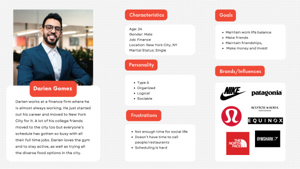
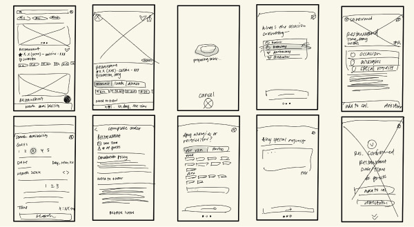
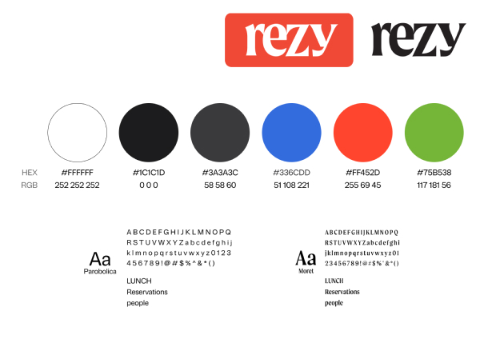
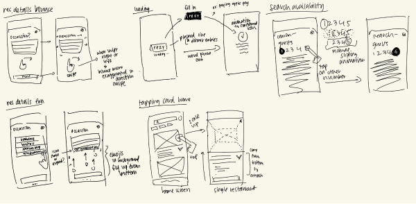
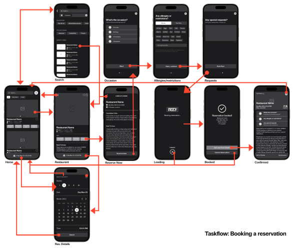
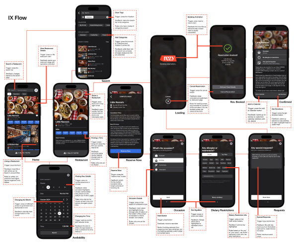

Booking A Reservation
I chose to recreate the booking a reservation task because it is essential to the entire app's purpose. I was also most familiar with this part of the app, and I saw many opportunities to implement different microinteractions. I also did basic app research to give myself an idea of why this app was important and who I was designing for.
 Creating Wireframes and Analyzing IX
After the task flow, I then started to sketch and create my wireframes. (link to wireframes) I also analyzed what microinteractions were currently in place, highlighting the triggers, feedback, modes, and rules.
At this point, I started to create a brand guide for my brand redesign into Rezy, which I chose to use similar colors but change the fonts. I believe the design of the current app is already aesthetic and did not think it needed to be changed much.
As for my font choices, I picked a similar sans serif font for the bulk of the text, but chose to incorporate a more stylistic text for the logo. To me, Moret feels more fancy or lively-er than the current font.
Creating IX Flow, Microinteraction Planning
I started to bring my screens to low-fidelity and incorporate them into another interaction flow with the frames I created. With sketches in mind for the microinteractions I wanted to incorporate, I could then define the rules of the new animations and think through the process of prototyping them.
  Final Product
I was able to incorporate all 5 of the microinteractions I wanted to implement, all within Figma's smart animation feature
Final project1. Card Expansion
I wanted to create a card expansion animation where it would take the image and enlarge it. Before, it was just a simple move in from the bottom animation, so this offers a different experience. ↓
2. Number of Guests
I wanted to create a sliding animation to show the number of guests being chosen, and exaggerated the bounce. I also learned how to implement auto layout to ensure a smooth transition between switching sections. ↓
3. Shake Animation of Icons
To make the process of selecting an occasion more fun, I wanted to implement the shaking of the icons when pressed. ↓
4. Bounce of Elements
When switching between 3 consecutive frames that essentially have the same content, I wanted to exaggerate the bounce when swiping. I believe it increases interaction and interest while not taking away from the content. ↓
5. Loading Animation
Their loading animation before felt very stale and not exciting. I wanted to implement my new logo with a new object, a name card. I think this is my most favorite animation I made for this project! ↓
Conclusion
In conclusion, I actually really enjoyed this project. It has been hard for me to enjoy UI design but I think the process of thinking through the prototyping, how to animate and increase the quality of the animations was interesting.
I think it also helped that the current UI of Resy was very easy to work with and was pretty much a blank slate for whatever animations I wanted to implement.
Regarding the prep work and research, I quite enjoyed the planning process too. As my second Figma project, I think I learned a lot more about Figma's possibilities and improved a lot of my design thinking skills and practices.